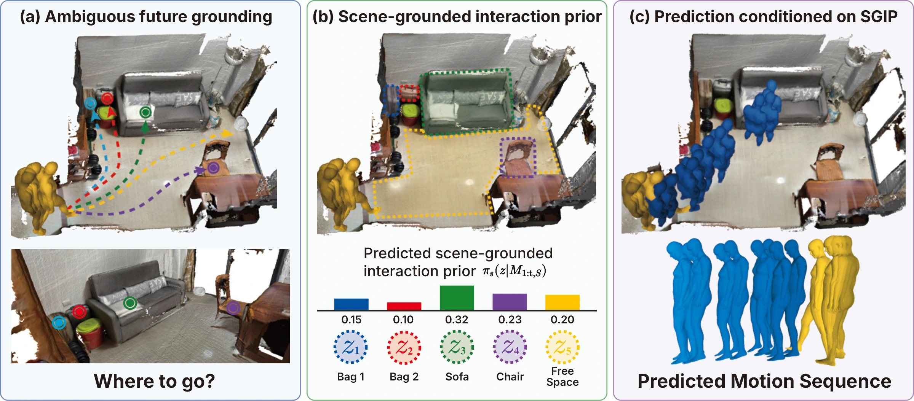
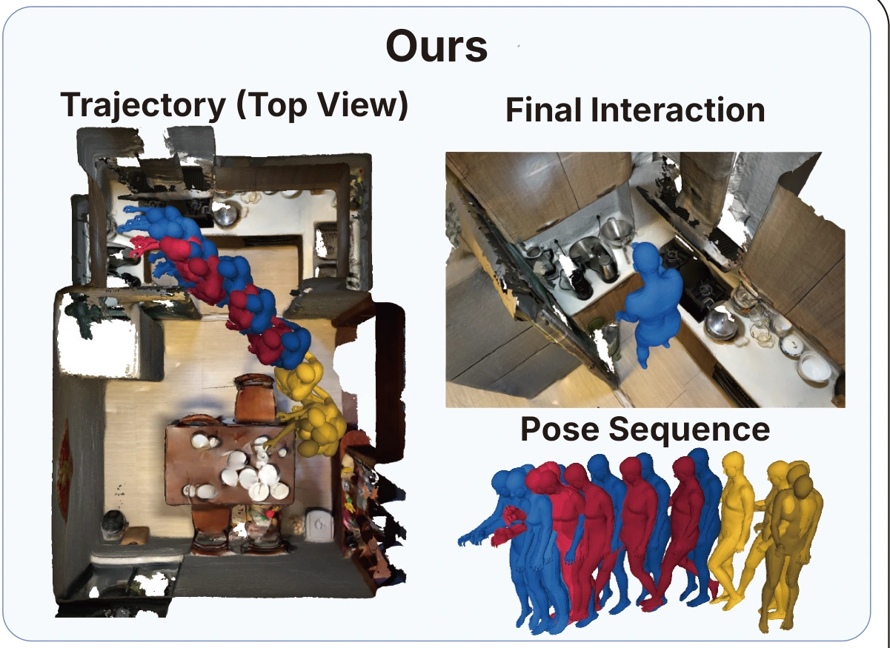
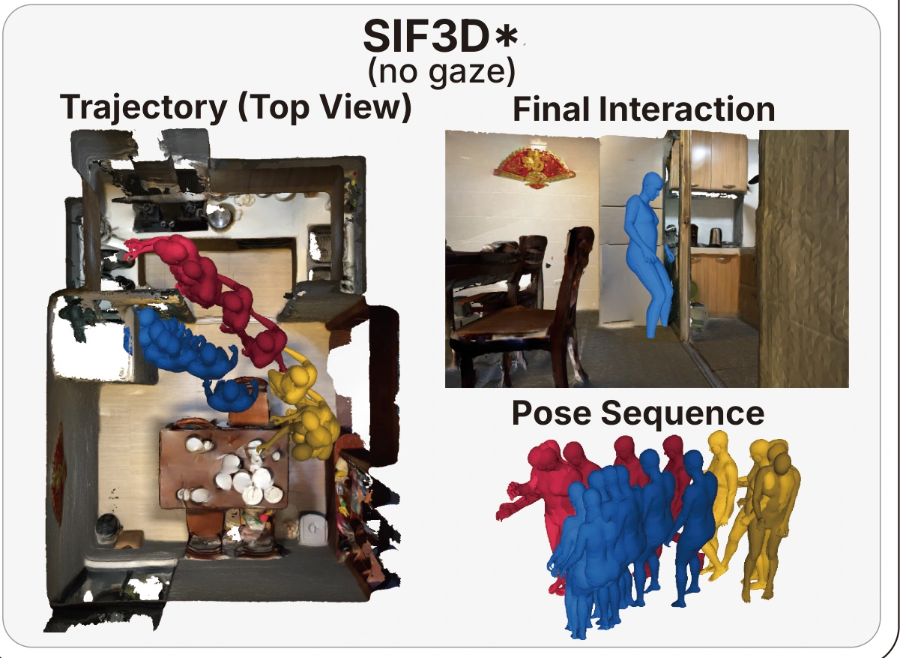
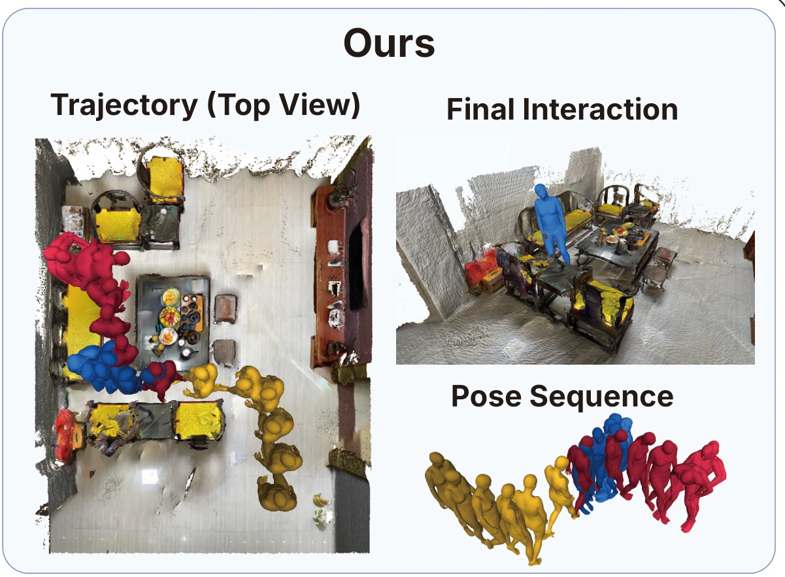
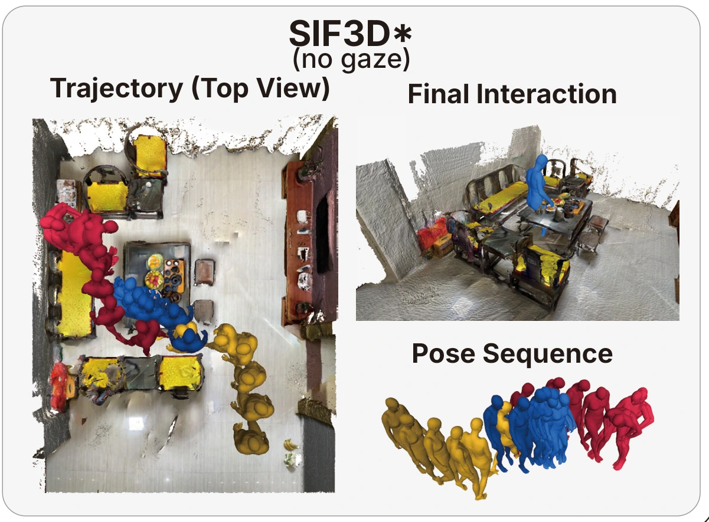
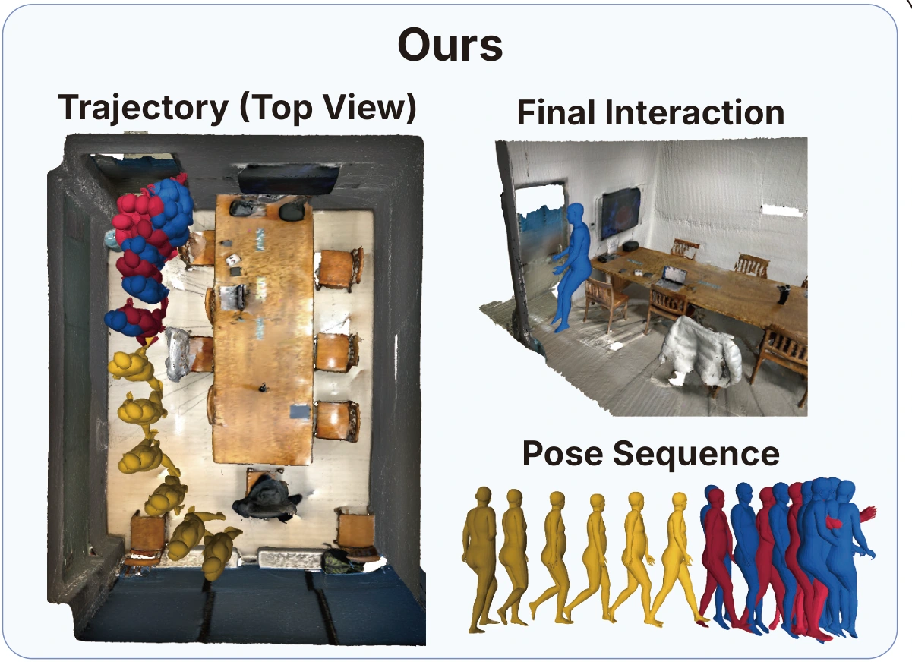
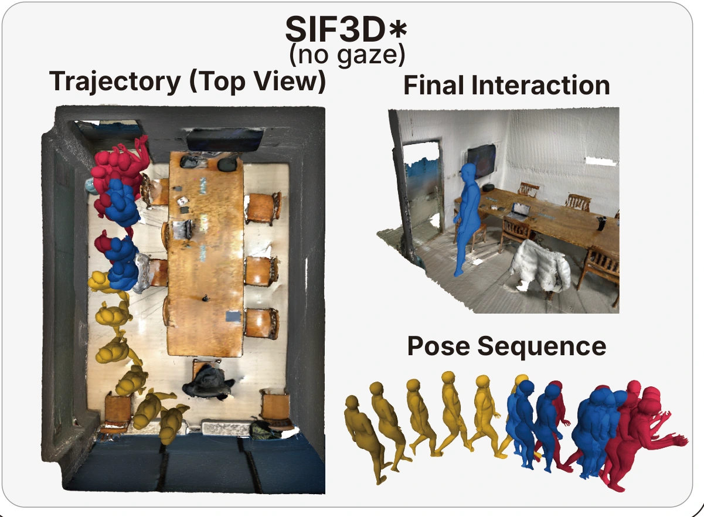
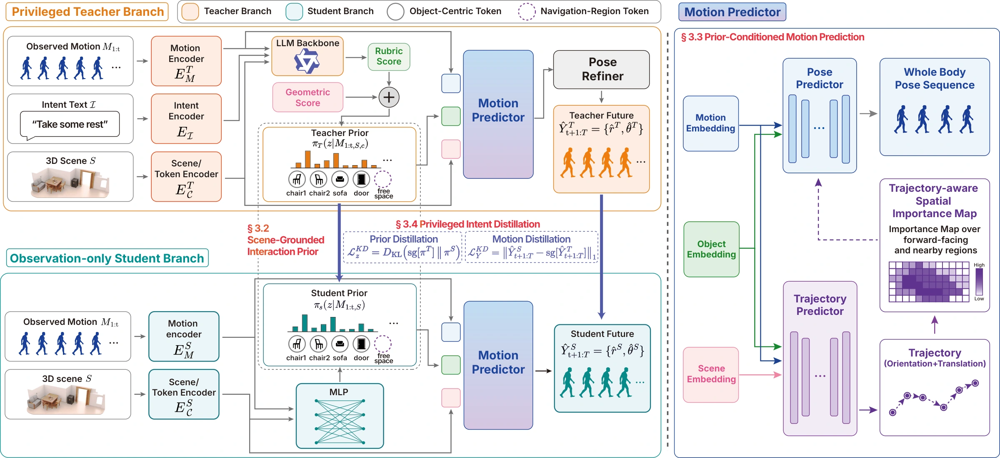
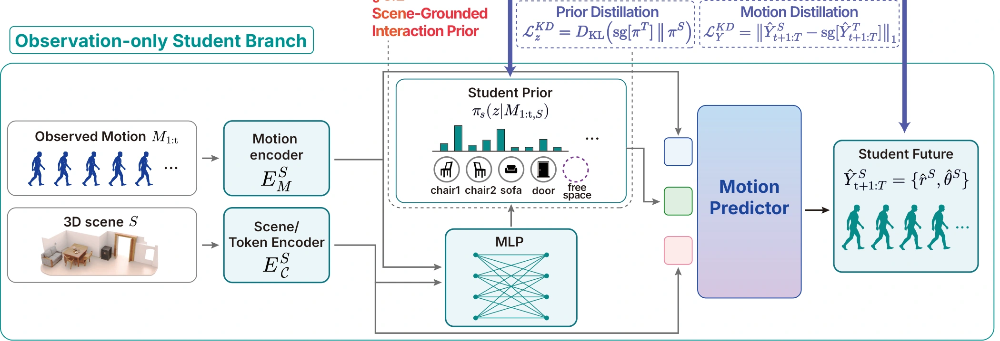
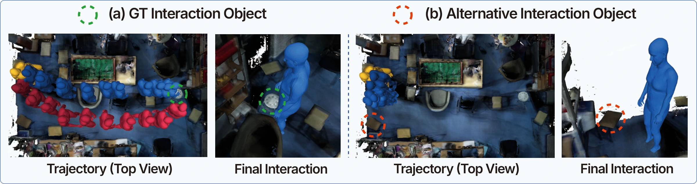

Ground the interaction
Predict a prior over object instances and a navigation token, making future-motion grounding explicit.
Predicting where people will interact—and how they will move.

01 / THE IDEA
A person approaching a sofa might sit down, turn toward a chair, or keep walking. Motion history alone leaves the next interaction ambiguous.
SGIP learns an explicit distribution over scene objects and navigable space to guide what happens next.
Download the overviewPredict a prior over object instances and a navigation token, making future-motion grounding explicit.
Transfer a teacher’s intent-aware grounding and motion predictions into an observation-only student.
Predict trajectory and full-body pose using motion and scene alone—without gaze, textual intent, or an LLM at inference.
Human motion prediction (HMP) aims to forecast future movement from an observed motion sequence, and recent methods have incorporated 3D scene geometry and object semantics to improve long-term plausibility. However, the destination of future motion remains ambiguous in cluttered scenes: the same observed motion can lead to different interaction targets or navigation modes. Existing methods either handle this ambiguity implicitly or rely on auxiliary signals like gaze that are hard to obtain in practice.
To address this, we propose SGIP, which explicitly predicts where in the scene future motion will be grounded across both objects and open navigation regions, and uses it to condition future trajectory and full-body pose prediction. This scene-grounded interaction prior is learned via intent distillation: at training time only, a teacher model scores candidate scene regions by combining an LLM prompted with a textual description of the person’s intent with geometric motion-scene features. A student model learns to reproduce these scores from only the observed motion and 3D scene, making intent and LLM unnecessary at test time.
Across multiple benchmark datasets, SGIP outperforms prior scene-aware baselines on both trajectory and pose accuracy in a realistic deployment setting where neither gaze nor intent is available at inference, demonstrating effectiveness of the proposed framework.
02 / SEE THE DIFFERENCE
Compare predicted paths, final interactions, and body poses across three GIMO scenes.


Kitchen · Anticipating an interaction among nearby objects.


Living room · Resolving competing destinations in a cluttered scene.


Seminar room · Aligning body placement with the interaction target.
Original qualitative results from the paper. SIF3D* denotes the gaze-free baseline. View the complete figure ↗
03 / HOW IT WORKS
Privileged intent supervises the teacher during training. Its grounding and motion knowledge are distilled into the student.

TRAINING / TEACHERTextual intent, semantic rubric scores, and motion–scene geometry build an intent-conditioned prior. The teacher also provides intent-aligned motion predictions.
DEPLOYMENT / STUDENTThe student learns both where future motion is grounded and how to move. The teacher and its privileged inputs are used only during training.

At inference: no gaze, textual intent, or LLM. The standard single-future evaluation uses the highest-probability grounding token.
04 / BEYOND A SINGLE TARGET
Keep the observations and predictor fixed. Change the grounding token, and the predicted path and interaction pose change with it.

05 / THE EVIDENCE
Evaluated on GIMO and PROX under observation-only inference. Lower trajectory and joint-position errors are better.
GIMO · TRAJECTORY PATH
14.5%↓PROX · TRAJECTORY DESTINATION
12.6%↓GIMO · GROUNDING
76%| Method | Traj-path ↓ | Traj-dest ↓ | MPJPE-path ↓ | MPJPE-dest ↓ |
|---|---|---|---|---|
| LTD | 673 | 890 | 156.4 | 203.0 |
| SPGSN | 700 | 893 | 157.0 | 202.2 |
| AuxFormer | 732 | 902 | 165.1 | 202.4 |
| SIF3D* | 700 | 823 | 164.2 | 199.6 |
| GAP3DS* | 642 | 701 | 170.1 | 206.4 |
| SGIP Ours | 549 ± 5.0 | 681 ± 7.6 | 153.1 ± 1.8 | 195.1 ± 2.6 |
SGIP: mean ± standard deviation over 5 seeds. * Gaze-free re-evaluation of a gaze-using baseline. Bold values are best within this comparison.
| Method | Traj-path ↓ | Traj-dest ↓ | MPJPE-path ↓ | MPJPE-dest ↓ |
|---|---|---|---|---|
| LTD | 677 | 753 | 223.4 | 226.6 |
| SPGSN | 595 | 663 | 286.3 | 271.3 |
| AuxFormer | 553 | 727 | 199.2 | 240.8 |
| SIF3D* | 488 | 659 | 228.5 | 217.4 |
| SGIP Ours | 470 | 576 | 194.6 | 197.7 |
The architecture is trained and evaluated on PROX. * Gaze-free SIF3D. Bold values are best within this comparison.
GIMO diagnostic comparison from the paper. These models use gaze or textual intent beyond motion and scene. SGIP’s privileged teacher is not deployed.
| Method | Extra cue | Traj-path ↓ | Traj-dest ↓ | MPJPE-path ↓ | MPJPE-dest ↓ |
|---|---|---|---|---|---|
| LTD w/ gaze | Gaze | 655 | 801 | 155.6 | 202.0 |
| SPGSN w/ gaze | Gaze | 702 | 982 | 156.0 | 202.0 |
| AuxFormer w/ gaze | Gaze | 622 | 746 | 161.5 | 201.1 |
| BiFu | Gaze | 661 | 727 | 167.8 | 205.0 |
| SIF3D | Gaze | 590 | 666 | 156.6 | 195.7 |
| GAP3DS | Gaze | 575 | 623 | 141.2 | 171.4 |
| SGIP privileged | Gaze | 528 | 635 | 149.9 | 190.6 |
| SGIP privileged | Textual intent | 485 | 556 | 151.2 | 187.8 |
WHAT MAKES THE DIFFERENCE?
Prior distillation provides the largest single-component improvement in trajectory error. Motion-only distillation can misalign the teacher’s and student’s grounding.
Combining both signals improves trajectory and final-pose errors over prior distillation alone.
| Distillation | Traj-path ↓ | MPJPE-dest ↓ |
|---|---|---|
| None | 740 | 204.8 |
| Motion only | 856 | 198.9 |
| Prior only | 574 | 198.6 |
| Prior + motion | 549 | 195.1 |
06 / BUILD ON THIS WORK
@inproceedings{soon2026sgip,
title = {Learning Scene-Grounded Interaction Priors for Scene-Aware Human Motion Prediction},
author = {Soon, Donghyeon and Yoon, Jiil and Kim, Hyeondong and Park, Daehee},
booktitle = {Advances in Neural Information Processing Systems},
year = {2026}
}